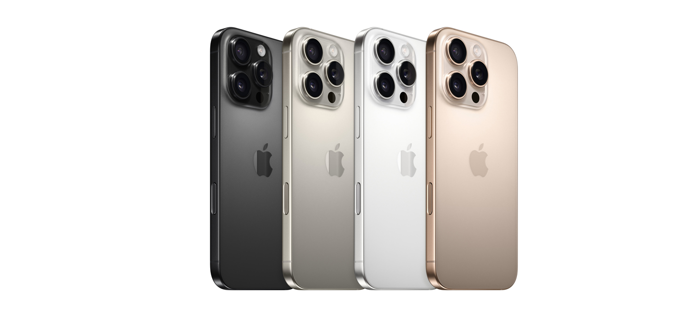
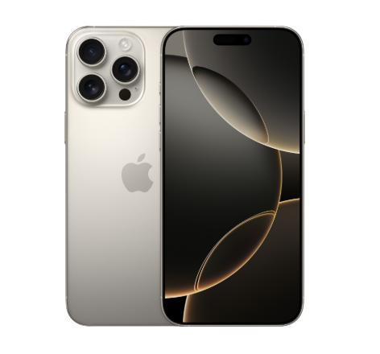

<!DOCTYPE html>
<html lang="th">
<head>
    <meta charset="UTF-8">
    <title>หน้าหลัก</title>
</head>
<body>
    <!-- ส่วนของเนื้อหา -->
</body>
</html>

<nav>
    <!-- ลิงก์ภายใน - ไปยังหน้าในเว็บไซต์เดียวกัน -->
    <a href="index.html">หน้าหลัก</a>
    <a href="pages/about.html">เกี่ยวกับเรา</a>
    <a href="pages/contact.html">ติดต่อเรา</a>
    
    <!-- ลิงก์ภายนอก - เปิดในแท็บใหม่ -->
    <a href="https://www.google.com" target="_blank">
        ไปยัง Google
    </a>
</nav>
<hr>
<!-- รูปภาพในโฟลเดอร์ images -->


<!-- สร้างจุดเชื่อมโยง -->
<section id="top">
    <h1>เลือกซื้อ iPhone ที่คุณชอบ จ่ายดอกเบี้ย 0% นานสูงสุด 10 เดือน</h1>
</section>


    
<!-- รูปภาพในโฟลเดอร์ย่อย products -->

     
     <section id="products">
        <h2>เลือกซื้อ สินค้าของเรา</h2>
    </section>
<h2>iphone 16</h2>    
     <figure>   
             <a href="images/products/ip16b2.png">
                
            </a>

        <figcaption>
            <p><strong>รายละเอียด</strong>
                <pre>16 ขอแนะนำตัวควบคุมกล้อง, กล้อง Fusion 48MP, 5 สีสันสดใส และชิป A18</pre>
            <p><strong> ฟีเจอร์</strong>
                <pre>ควบคุมเต็มตัวด้วยตัวควบคุมกล้อง—ตัวควบคุมกล้องให้คุณมีวิธีที่ง่ายขึ้นในการเข้าถึงเครื่องมือของกล้องได้อย่างรวดเร็ว อย่างการซูม หรือมิติความชัดลึก เพียงแค่นี้คุณก็ถ่ายภาพที่โดนใจได้ในพริบตา
ถ่ายได้ไกลขึ้นและใกล้ขึ้น—กล้องอัลตร้าไวด์ที่ดียิ่งขึ้นพร้อมออโต้โฟกัสช่วยให้คุณสามารถถ่ายภาพและวิดีโอมาโคร แบบมีรายละเอียดคมชัดเหลือเชื่อ นอกจากนี้ยังใช้กล้อง Fusion 48MP เพื่อถ่ายภาพความละเอียดสูงที่สวยงามน่าทึ่ง
และซูมเข้าด้วยเทเลโฟโต้ 2 เท่าที่มีคุณภาพระดับออปติคัลได้อีกด้วยรูปแบบภาพถ่าย—คุณสมบัติรูปแบบภาพถ่ายเจเนอเรชั่นล่าสุดให้คุณสร้างสรรค์ได้ยืดหยุ่นยิ่งขึ้นเพื่อให้ทุกภาพบ่งบอกความเป็นคุณได้มากขึ้น 
และยังสามารถเปลี่ยนกลับได้ทุกเมื่อไม่ว่าจะเป็นรูปแบบไหน ชิป A18 ที่ฉลาดสุดล้ำ— ชิป A18 มีความล้ำหน้ากว่าชิป A16 Bionic ใน iPhone 15 ถึงสองเจเนอเรชั่น โดยเป็นชิปที่ขับเคลื่อนคุณสมบัติสุดล้ำด้านภาพถ่ายและวิดีโอ
และรองรับการเล่นเกมระดับคอนโซล โดยยังคงประหยัดพลังงานอย่างเหนือชั้นแบตเตอรี่ที่ใช้งานได้นานขึ้น—iPhone 16 ทำงานร่วมกับชิป A18 เพื่อให้แบตเตอรี่ใช้งานได้นานขึ้นยกใหญ่โดยเล่นวิดีโอได้นานสูงสุด 22 ชั่วโมง 
และชาร์จผ่าน USB-C หรือติดเข้ากับที่ชาร์จ MagSafe เพื่อการชาร์จแบบไร้สายที่เร็วขึ้น ออกแบบมาให้ใช้ได้ยาวนาน—iPhone 16 มาในดีไซน์แบบอะลูมิเนียมอันทนทาน เกรดเดียวกับที่ใช้ในอุตสาหกรรมอวกาศ 
พร้อมด้วยจอภาพ Super Retina XDR ขนาด 6.1 นิ้ว3 ทั้งยังทนทานอย่างน่าทึ่งด้วยวัสดุ Ceramic Shield เจเนอเรชั่นล่าสุดที่แข็งแกร่งยิ่งกว่ากระจกไหนๆ บนสมาร์ทโฟนถึง 2 เท่า
พบกับปุ่มแอ็คชั่น—ทางลัดพิเศษสู่คุณสมบัติโปรดของคุณ แค่กดค้างไว้ก็เรียกใช้สิ่งที่คุณต้องการได้ทันที ไม่ว่าจะเป็นไฟฉาย เสียงบันทึก โหมดปิดเสียง และอีกมากมาย
ปรับแต่ง iPHONE ของคุณ—iOS 18 ให้คุณย้อมสีไอคอนในหน้าจอโฮมเป็นสีอะไรก็ได้ และยังค้นหาช็อตที่ชื่นชอบได้เร็วขึ้นในแอปรูปภาพที่ออกแบบใหม่ หรือจะใส่เอฟเฟ็กต์เคลื่อนไหวสนุกๆ กับคำ วลี หรืออิโมจิใดๆ ก็ได้ใน iMessage4
คุณสมบัติด้านความปลอดภัยที่สำคัญ—คุณสมบัติการตรวจจับการชนกันช่วยให้ iPhone สามารถตรวจจับเหตุรถชนอย่างรุนแรง และจะโทรขอความช่วยเหลือเมื่อคุณไม่สามารถ5</pre> 

        </figcaption>
    </figure>

    <h2>iphone 16 Pro Max</h2>    
    <figure>    
            <a href="images/products/ip16pm2.png">
               
           </a>

       <figcaption>
           <p><strong>รายละเอียด</strong>
               <pre>iPhone 16 Pro Max มาพร้อมดีไซน์แบบไทเทเนียมที่โดดเด่นสวยงาม, ตัวควบคุมกล้อง, Dolby Vision ระดับ 4K ที่ 120 fps และ ชิป A18 Pro</pre>
           <p><strong> ฟีเจอร์</strong>
               <pre>ดีไซน์แบบไทเทเนียมที่โดดเด่นสวยงาม — iPhone 16 Pro Max มาในดีไซน์แบบไทเทเนียมที่ทั้งแข็งแกร่งและน้ำหนักเบา พร้อมด้วยจอภาพ Super Retina XDR ขนาด 6.9 นิ้ว ที่ใหญ่ขึ้น 
ทั้งยังทนทานอย่างน่าทึ่งด้วยวัสดุ Ceramic Shield เจเนอเรชั่นล่าสุดที่แข็งแกร่งยิ่งกว่ากระจกไหนๆ บนสมาร์ทโฟนถึง 2 เท่าควบคุมเต็มตัวด้วยตัวควบคุมกล้อง — ตัวควบคุมกล้องให้คุณมีวิธีที่ง่ายขึ้นในการเข้าถึงเครื่องมือ
ของกล้องได้อย่างรวดเร็ว อย่างการซูมหรือมิติความชัดลึก เพียงแค่นี้คุณก็ถ่ายภาพที่โดนใจได้ในพริบตาช็อตที่สวยเด่นถูกใจ — กล้องอัลตร้าไวด์ 48MP ที่ล้ำยิ่งขึ้นให้คุณเก็บบันทึกรายละเอียดที่ตื่นตาตื่นใจในภาพมาโคร
และภาพมุมกว้างสุดสายตา และถ้าอยากได้ภาพที่คมชัดขึ้นจากระยะที่ไกลขึ้น ก็ทำได้ง่ายๆ ด้วยกล้องเทเลโฟโต้ 5 เท่า
วิดีโอระดับโปร — ยกระดับวิดีโอของคุณไปอีกขั้นอย่างที่ไม่เคยทำได้มาก่อนด้วย Dolby Vision ระดับ 4K ที่ 120 fps ซึ่งขับเคลื่อนโดยกล้อง Fusion 48MP และไมโครโฟนคุณภาพระดับสตูดิโอเพื่อคุณภาพการบันทึกเสียงที่สูงขึ้น 
ราวกับมีสตูดิโอระดับโปรในกระเป๋าคุณรูปแบบภาพถ่าย — คุณสมบัติรูปแบบภาพถ่ายเจเนอเรชั่นล่าสุดให้คุณสร้างสรรค์ได้ยืดหยุ่นยิ่งขึ้นเพื่อให้ทุกภาพบ่งบอกความเป็นคุณได้มากขึ้น และยิ่งมีกระบวนการจัดการภาพที่ล้ำหน้าด้วยแล้ว 
คุณจึงสามารถเปลี่ยนกลับได้ทุกเมื่อไม่ว่าจะเป็นภาพในรูปแบบไหนขุมพลังแห่งชิป A18 PRO — ชิป A18 Pro ขับเคลื่อนคุณสมบัติสุดล้ำด้านภาพถ่ายและวิดีโออย่างตัวควบคุมกล้อง 
ทั้งยังให้ประสิทธิภาพด้านกราฟิกที่เหนือชั้นสำหรับการเล่นเกมระดับ AAAแบตเตอรี่ที่ใช้งานได้นานขึ้นแบบก้าวกระโดดครั้งใหญ่ — iPhone 16 Pro Max มีประสิทธิภาพที่ประหยัดพลังงานอย่างน่าทึ่ง โดยเล่นวิดีโอได้นานสูงสุด 33 ชั่วโมง 
และชาร์จผ่าน USB-C หรือติดเข้ากับที่ชาร์จ MagSafe เพื่อการชาร์จแบบไร้สายที่เร็วขึ้นปรับแต่ง iPHONE ของคุณ — iOS 18 ให้คุณย้อมสีไอคอนในหน้าจอโฮมเป็นสีอะไรก็ได้ และยังค้นหาช็อตที่ชื่นชอบได้เร็วขึ้นในแอปรูปภาพ
ที่ออกแบบใหม่ หรือจะใส่เอฟเฟ็กต์เคลื่อนไหวสนุกๆ กับคำ วลี หรืออิโมจิใดๆ ก็ได้ใน iMessageคุณสมบัติด้านความปลอดภัยที่สำคัญ — คุณสมบัติการตรวจจับการชนกันช่วยให้ iPhone สามารถตรวจจับเหตุรถชนอย่างรุนแรง 
และจะโทรขอความช่วยเหลือเมื่อคุณไม่สามารถ</pre> 

       </figcaption>
   </figure>


<!-- ลิงก์ไปยังจุดเชื่อมโยง -->
<a href="#top">กลับด้านบน</a>
<a href="#products">ไปยังสินค้า</a>

<!-- ลิงก์อีเมล -->
<a href="mailto:contact@example.com">ส่งอีเมลหาเรา</a>

<!-- ลิงก์โทรศัพท์ -->
<a href="tel:+66812345678">โทร 081-234-5678</a>

<!-- ลิงก์ดาวน์โหลด -->
<a href="files/document.pdf" download>
    ดาวน์โหลดเอกสาร
</a>
